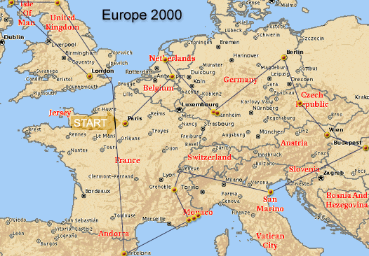
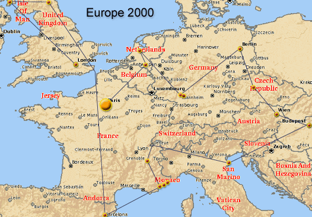
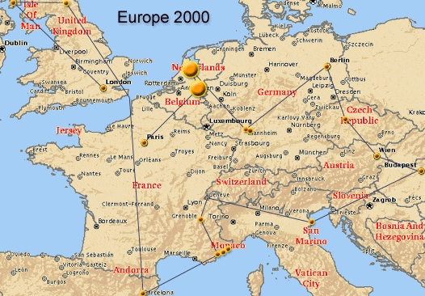
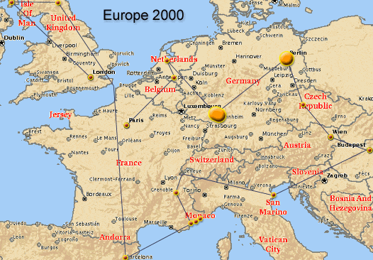
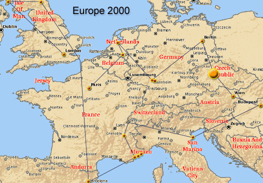
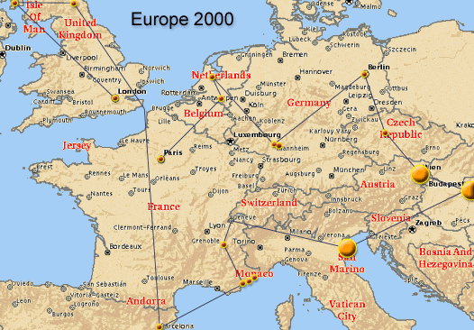
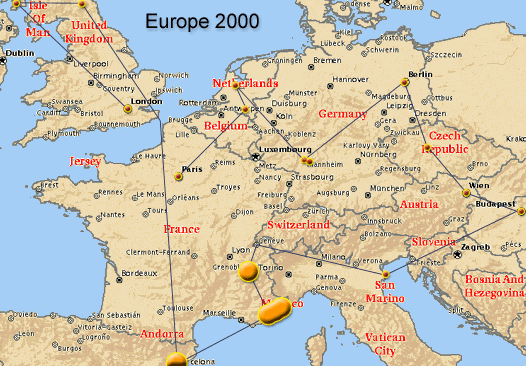
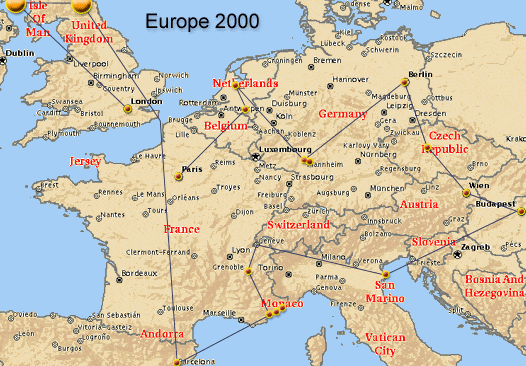
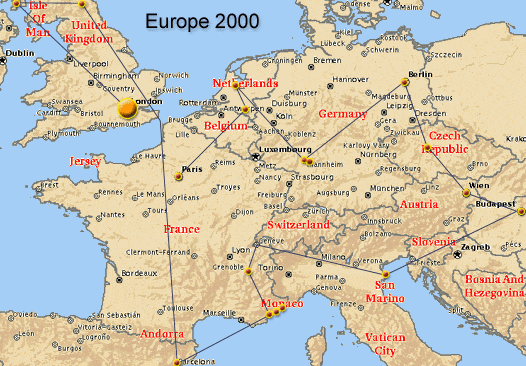

|

During the summer of 2000, Ryan Geiss, Julie McNeil,
Debbie Wiece, and I traveled about Europe. In this set of web pages I'll
share my journal, as well as many of the pictures we took.
How to view these pages:
-
Click on the map at the top of the page to quickly jump
to that portion of our trip.
-
When clicking on an picture:
-
For tall or wide images, you'll see frames in your
browser.
-
You can drag these frames to enlarge or shrink the image.
-
Many images are panoramic, either horizontally or
vertically. Don't forget to slide the scroll bar to view the whole picture.
-
Turn your monitor's brightness up if the pictures are
dark.
A few suggestions if you are traveling:
-
Use HelloMaps:
-
I kept an Online Journal of my Travel as I traveled! My friends and family could check the web page and see my progress through Europe and read my journal. This was as easy as writing email, and really great!
-
HelloMaps was designed and implemented by Joe Johnston at my request.
-
Bring:
- Towel, shower size or slightly larger, use as a towel, pillow, blanket, &c. Carry it outside your backpack through a loop on the top.
- Water, in a small plastic bottle. Much cheaper when you get thirsty.
- ZipLock Freezer Bags, put everything in them, makes packing and managing everything much easier. Bring several spares. Carry one with you at all times, you can protect your wallet & camera from rain.
- Compass, if you can find a small key chain one, it'll do.
- Light, a 'PhotonLight' is a tiny thing that fits on a key chain and is brighter than a flashlight.
- Camera, and waste your film. I wish I had taken three times the pictures that I did. It's a little bit of hassle to always carry a camera, but pictures help so much with the memories, you'll be seeing so much. Bring a really cheap camera you don't care very much about, and you won't worry about it so much.
- Sandals, don't waste socks. Doing laundry is a pain. (Oh, make sure that both your feet and the sandals and are broken in prior to traveling)
- Calculator, really small & cheap. It's very useful for converting money & tips. The 'Euro' should make this easier, but still..
- Hostels: When arriving in a city, just purchase a phone card, and call hostels from your traveling book. Don't bother going to a hostel until you know that have room.








|